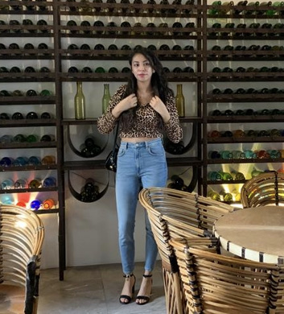

LittleSitios Solutions
Desarrollamos la mejor experiencia para tus usuarios.
Bienvenido a LittleSitios Solutions
En LittleSitios Solutions, transformamos ideas en realidades digitales.
Con una mezcla única de creatividad, tecnología y estrategia, diseñamos experiencias web que impulsan el éxito de nuestros clientes.
Nuestra misión es no solo construir sitios web excepcionales, sino también ayudar a las empresas a alcanzar su máximo potencial en el entorno digital.
Servicios
En LittleSitios Solutions, ofrecemos una gama completa de servicios para asegurar tu éxito en línea:
Diseño y Desarrollo Web:Creación de sitios web atractivos, funcionales y optimizados para SEO.
E-commerce:Desarrollo de soluciones de comercio electrónico para una experiencia de compra sin fisuras.
Mantenimiento y Soporte:Servicios continuos para asegurar el rendimiento óptimo de tu sitio web.
Marketing Digital:Estrategias personalizadas para aumentar tu visibilidad y atraer a tu público objetivo.
Branding y Diseño Gráfico:Creación de identidades de marca que comunican y conectan con el mercado.
Visión
Aspiramos a ser reconocidos globalmente como líderes e innovadores en el ámbito del desarrollo web. Nuestra visión es ser la consultora de referencia para empresas que buscan no solo establecer su presencia en línea, sino dominar en sus respectivos sectores a través de soluciones web de vanguardia.
Misión
En LittleSitios Solutions, nuestra misión es empoderar a negocios de todos los tamaños a maximizar su potencial en línea mediante soluciones digitales innovadoras y personalizadas. Nos dedicamos a crear experiencias web que no solo capturan la esencia de nuestras marcas asociadas, sino que también ofrecen una funcionalidad excepcional, mejorando la interacción con sus usuarios.
Nuestro equipo
Somos un equipo de diseñadores, desarrolladores y estrategas digitales apasionados por lo que hacemos. Cada proyecto es una oportunidad para innovar y superar los límites de lo posible en el espacio digital. Nuestra cultura se basa en la colaboración, la creatividad y el compromiso constante con la excelencia.

Victor Manuel Ruiz Escareño
Es un placer presentarme como estudiante de Ingeniería en Sistemas Computacionales, una carrera que me ha dotado de una sólida base en lenguajes de programación tales como Java, Python y C++, además de una profunda comprensión de sistemas operativos basados en Linux y habilidades en el lenguaje de programación estadística R. Actualmente, estoy aplicando y ampliando estos conocimientos a través de mi servicio social en el Instituto Nacional de Medicina Genómica (INMEGEN), donde tengo la oportunidad de contribuir a proyectos que se encuentran en la intersección de la informática y la genómica, desafiándome a mí mismo y permitiéndome crecer profesionalmente en un entorno innovador y de vanguardia.

Sofía Pacheco Rodríguez
Soy Sofía, una estudiante de ingeniería en busca de oportunidades para aplicar los conocimientos adquiridos en desarrollos que generen un impacto positivo. Dado que encuentro fascinante todo lo relacionado con la programación, estoy buscando proyectos que me ayuden a definir mi área de interés profesional, debido a esto tengo una gran disposición para el aprendizaje.
Ronald Maurice Enrique Acuña Montero
Soy estudiante de la carrera de Ingeniería en Sistemas Computacionales, sigo aprendiendo los distintos lenguajes de programación, buscando dominar Java, JavaScript, Python, C y C++
Contacto
¿Listo para llevar tu proyecto al siguiente nivel? Ponte en contacto con nosotros para discutir cómo podemos ayudarte a alcanzar tus objetivos digitales.
Nuestras redes sociales
Instagram: LittleSitios Solutions | Facebook: LittleSitios Solutions | Twitter: LittleSitios Solutions